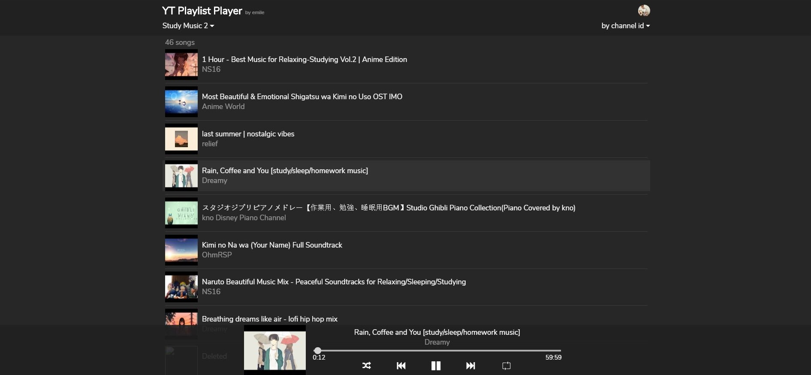
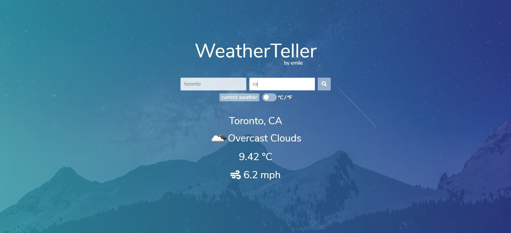

PROJECTS (Web applications)
Other non-web projects can be found on my github page.

By using the Youtube Data API and Google's authentication service,
the webapp retrieves all the youtube playlists of the signed-in user or of
a specific youtube channel and displays the songs from the playlists in an
audio player format.
Built with Angular and Node.js
Built with Angular and Node.js

By using the openweathermap api, the webapp displays forecast for any place in the world
by city name (and country). It also gives forecast for current user's location.
Built with HTML, CSS and JavaScript
Built with HTML, CSS and JavaScript

In this project, i used the themoviedb api to get data about the latest
trending movies. In addition, i added the feature of getting the most popular
movies of a particular year.
Built with HTML, CSS and JavaScript
Built with HTML, CSS and JavaScript